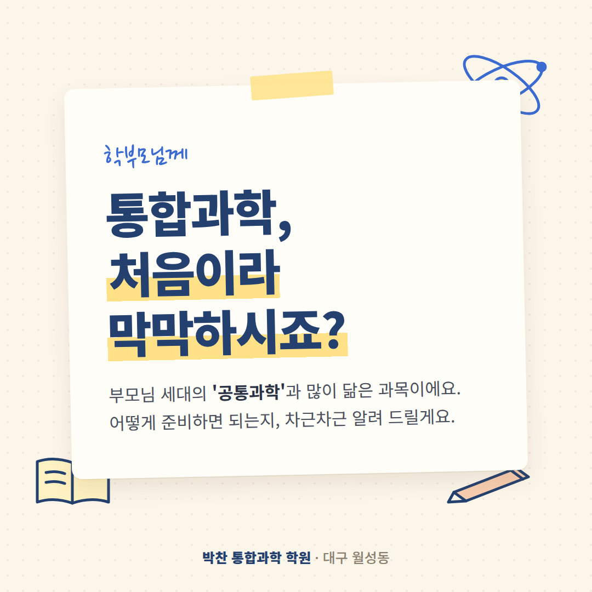
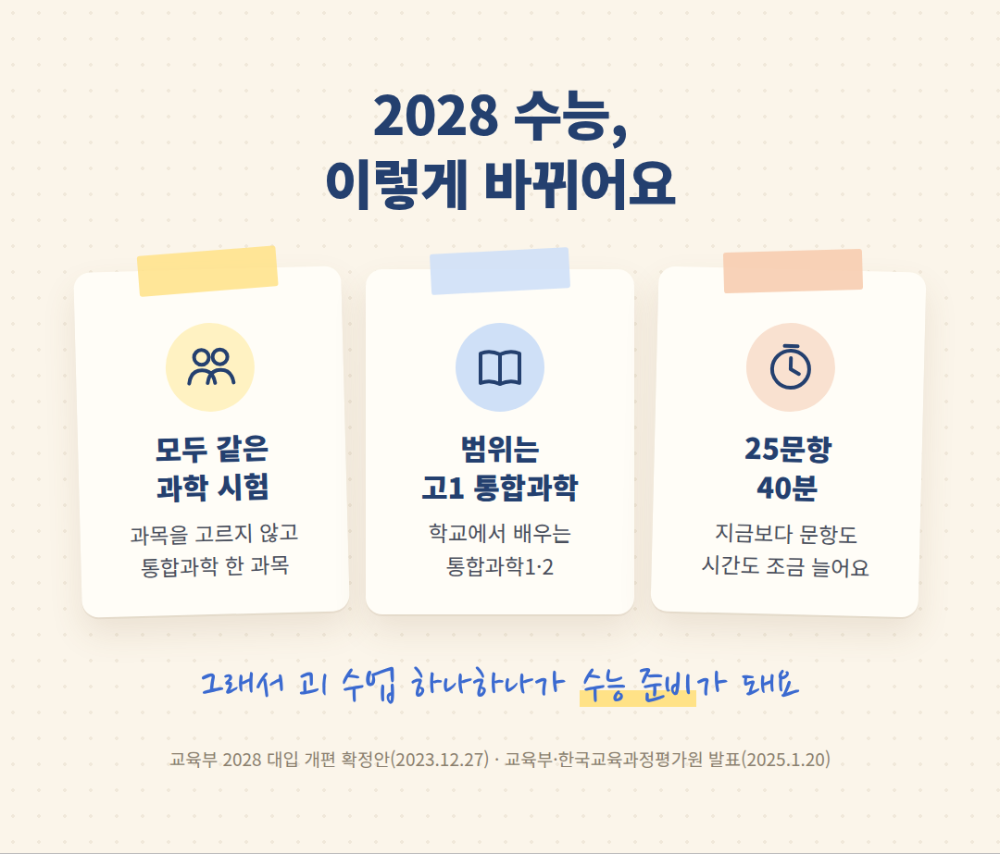
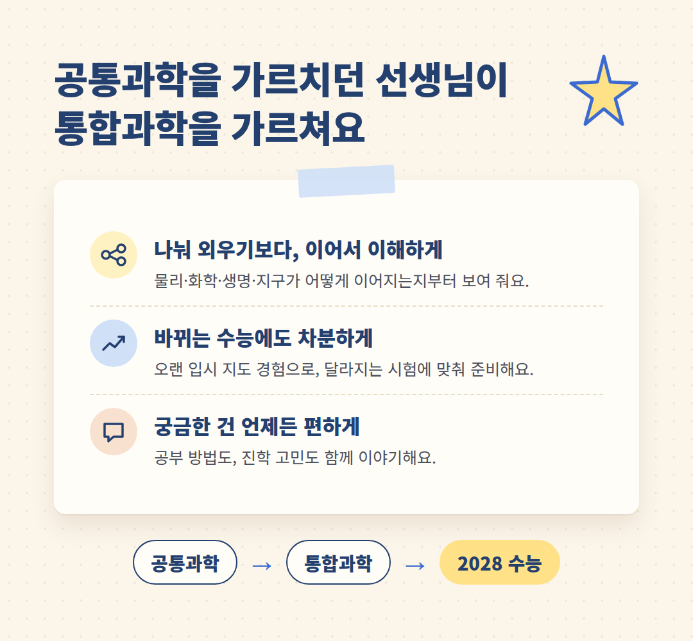
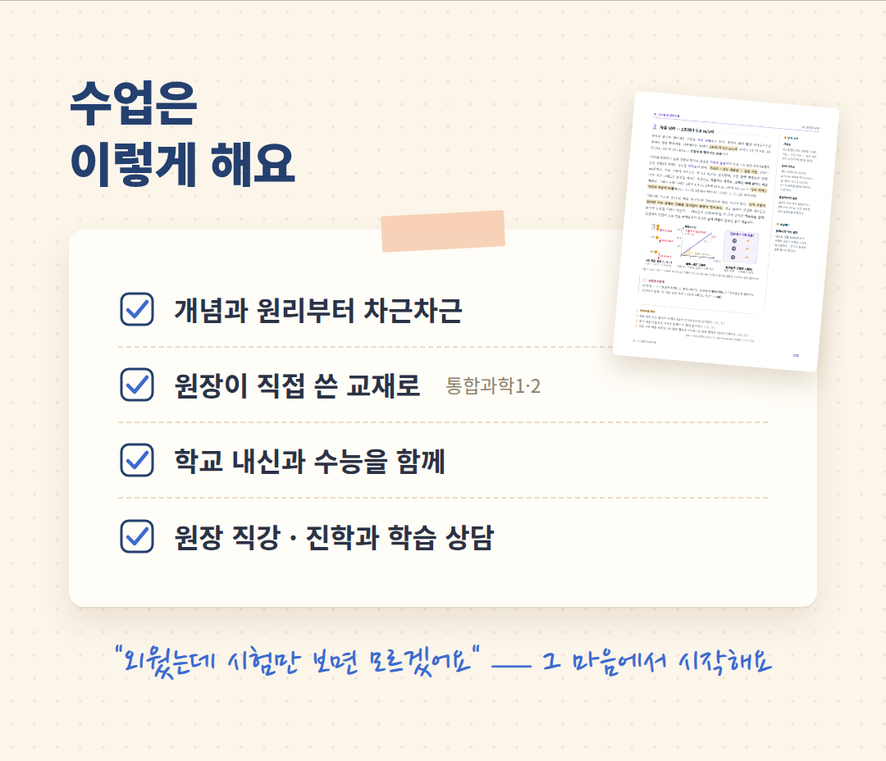

안녕하세요.
월성동 박찬 통합과학 학원입니다.
아이가 고등학생이 되면
처음 만나는 과학 과목이 있어요.
바로 '통합과학'이에요.
이름부터 낯설어서
어떻게 준비해야 할지
막막하다는 말씀을
요즘 자주 듣습니다.
오늘은 그 이야기를
편하게 나눠 보려고 해요.

2028 수능, 이렇게 바뀌어요
2028학년도 수능부터는
과학탐구에서 과목을 고르지 않아요.
모든 학생이 같은
'통합과학' 시험을 봅니다.
시험 범위는
고1 때 학교에서 배우는
통합과학1·2예요.
그래서 고1 수업 하나하나가
곧 수능 준비가 됩니다.

사실, 낯선 과목은 아니에요
부모님이 고1 때 배우신
'공통과학', 기억하시나요?
물리·화학·생물·지구과학을
한 과목으로 묶어 배웠던
바로 그 과목이에요.
통합과학은 그 공통과학과
많이 닮았어요.
저는 그 공통과학을
가르쳤던 선생님입니다.
과목을 따로따로 외우기보다
하나로 이어서 이해하는 수업.
통합과학에 꼭 필요한
바로 그 수업이에요.
오랫동안 입시를 지도해 온 경험으로
바뀌는 수능에도
차분하게 맞춰 준비하겠습니다.

수업은 이렇게 해요
"외웠는데 시험만 보면 모르겠어요."
아이들이 가장 많이 하는 말이에요.
그래서 외우기 전에
왜 그런지부터 함께 봅니다.
교재도 수업에 맞게
제가 직접 썼어요.
· 개념과 원리부터 차근차근
· 직접 쓴 교재 『통합과학 1·2』로
· 학교 내신과 수능을 함께
· 원장 직강 · 진학과 학습 상담

개설 강좌 · 교습비
【확인 필요 · 개설 강좌】
【확인 필요 · 교습비】
학원 등록 제2019-115호
오시는 길
대구 달서구 월성동
월성 CGV 건물 5층
상담 053-213-3577
아이에게 맞는 공부 방법,
편하게 물어봐 주세요.
천천히 이야기 나눠요.
감사합니다.